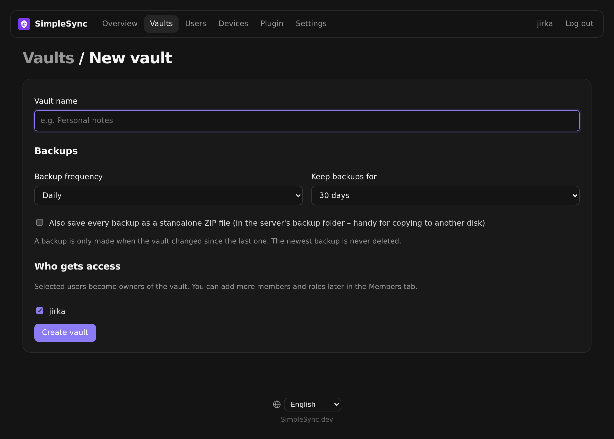
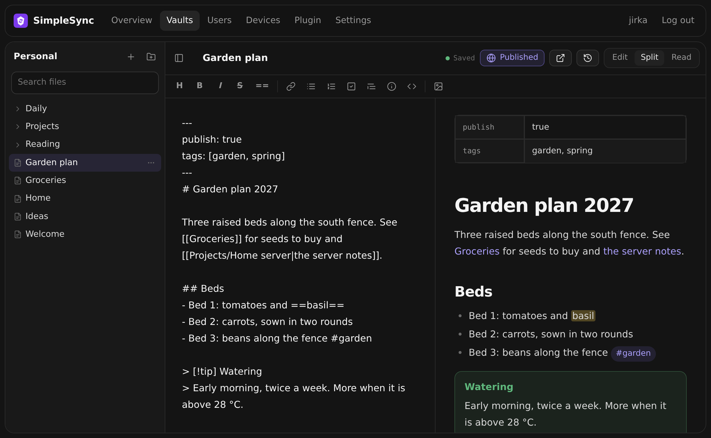
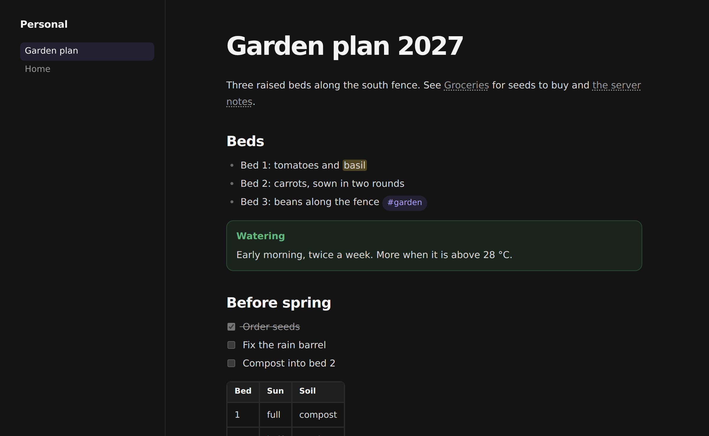
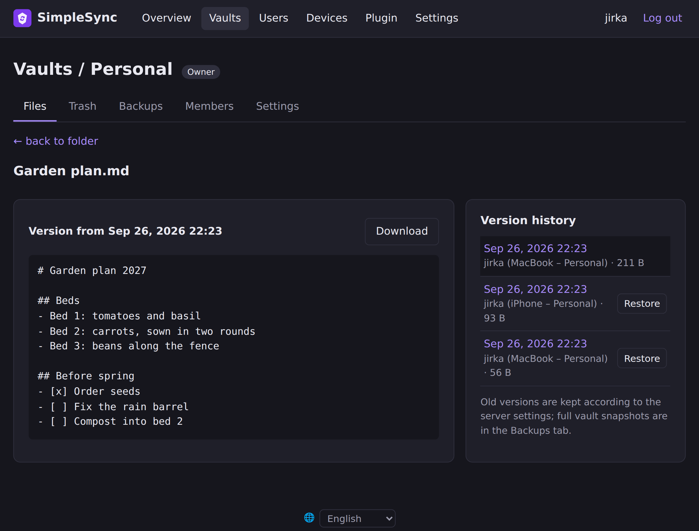

Set up SimpleSync
From an empty machine to a vault that syncs between your computer and phone. It takes about ten minutes.
Before you start
You need two things:
- A machine that runs Docker and stays on: a ZimaOS or CasaOS box, a Synology or Unraid NAS, a Raspberry Pi, or a small VPS with 1 GB of RAM.
- Obsidian 1.4 or newer on the devices you want to sync. Desktop, iPhone, iPad and Android all work. Anywhere else, a web browser is enough: see Edit in the browser.
The server stores your vaults and has a web admin. The Obsidian plugin logs in to the server and keeps one Obsidian vault in sync with one vault on the server. You can have several vaults and several users on one server.
1. Install the server
Pick the option that matches your machine.
- Open App Store›+›Install a customized app and switch to YAML.
- Delete what's there (Ctrl A, Delete) and paste the YAML below.
- Click Install, then open
http://<zimaos-ip>:8080.
name: obsisync
services:
obsisync:
image: ghcr.io/jirkacepelka/obsisync:latest
container_name: obsisync
restart: unless-stopped
ports:
- target: 8080
published: "8080"
protocol: tcp
environment:
TZ: Europe/Prague
volumes:
- type: bind
source: /DATA/AppData/obsisync/data
target: /data
x-casaos:
architectures:
- amd64
- arm64
main: obsisync
category: Utilities
title:
en_us: SimpleSync
tagline:
en_us: Simple self-hosted sync for Obsidian
icon: https://raw.githubusercontent.com/jirkacepelka/SimpleSync/main/server/internal/web/static/icon.svg
index: /
port_map: "8080"
scheme: httpYour data lives in /DATA/AppData/obsisync/data.
- At your domain registrar, add a DNS A record such as
sync.example.compointing to the VPS's IP address. - On the VPS, run the commands below. Caddy obtains a Let's Encrypt certificate by itself.
- Open
https://sync.example.com.
mkdir simplesync && cd simplesync
curl -O https://raw.githubusercontent.com/jirkacepelka/SimpleSync/main/deploy/docker-compose.caddy.yml
DOMAIN=sync.example.com docker compose -f docker-compose.caddy.yml up -dAny machine with Docker. Change TZ to your time zone; it's used for the times shown in the web admin.
docker run -d --name obsisync -p 8080:8080 -e TZ=Europe/Prague \
-v $PWD/data:/data --restart unless-stopped \
ghcr.io/jirkacepelka/obsisync:latestThen open http://<machine-ip>:8080.
2. Create the admin account
The first time you open the web admin, it asks you to create the administrator account. Do this right after installing: until that account exists, whoever opens the page first can create it.
The language picker is at the bottom of every page of the web admin.
3. Create vaults and users
In the web admin, go to Vaults and click New vault. Give it a name and choose:
- Backup frequency: off, every hour, every 6 hours, daily or weekly.
- Keep backups for: 7 days, 30 days, 90 days, 1 year or forever.
- Optionally also save as ZIP, which writes every backup as a separate ZIP file to
data/backups/.

Syncing only for yourself? You can skip users. To add family or colleagues, open Users, create an account for each person, then add them to a vault (see Sharing a vault).
You don't need to create it on the server first. Log in from the plugin on the device that has the notes and choose Create a new vault from this one in step 5. It uploads the vault for you.
4. Install the plugin
SimpleSync is listed in Obsidian's community plugins.
- In Obsidian, open Settings›Community plugins. If restricted mode is on, click Turn on community plugins.
- Click Browse and search for SimpleSync.
- Click Install, then Enable.
SimpleSync
by jirkacepelka · Desktop and mobile
The Open in Obsidian button jumps straight to the plugin inside Obsidian, if Obsidian is installed on this device.
5. Connect a vault
- Open Settings›SimpleSync.
- Enter the Server address (for example
https://sync.example.comor192.168.1.10:8080), your Name and Password, and click Log in. - Under Vault on the server, pick a vault and click Connect.
Or, to upload the vault that's open in Obsidian right now, use Or create a new vault from this one and click Create and connect.
That's it. The status bar at the bottom of Obsidian shows ✓ SimpleSync once the first sync finishes.
The shortcut: download a ready-made vault
For a new computer, this skips steps 4 and 5.
- In the web admin, click Download for Obsidian next to a vault. For an empty one, use Plugin›Download ready-made vault.
- Unzip it, for example into Documents.
- In Obsidian choose Open folder as vault and pick the unzipped folder.
- Click Trust author and enable plugins.
- Enter your password in the window that appears. The vault connects by itself and starts syncing.
The ZIP contains the notes and the plugin, already set up with your server address and name. It never contains a password or token.
What connecting does
If the server vault you connect to already has files, the Obsidian vault on this device is replaced by the server's copy. Nothing is uploaded from this device. Files that exist only here, or differ from the server, are moved to Obsidian's trash (.trash), so nothing is lost. The plugin asks before connecting.
- The server vault has content: this device becomes an exact copy of it. An empty or brand-new Obsidian vault can never overwrite the server.
- The server vault is empty: the content of this device is uploaded to it.
- If the first sync is interrupted, the next one continues in the same “copy the server” mode.
After the first sync, changes flow in both directions.
Phones and tablets
On iPhone, iPad and Android the steps are the same as on desktop:
- Create a new, empty vault in the Obsidian app. Don't use iCloud for it, so two sync tools don't fight over the same files.
- Install SimpleSync from Settings›Community plugins›Browse.
- Log in and connect to the vault. The server's copy is downloaded to the phone.
The phone syncs when a file changes, every minute while Obsidian is open, and whenever you bring Obsidian back to the foreground.
iOS works best with an https:// address. See the next section.
Reach it from anywhere
To sync a phone on mobile data, the server has to be reachable outside your home network. Pick one:
- Tailscale (in the ZimaOS App Store): install it on the server and on your devices.
tailscale servegives you a free HTTPS address. - Cloudflare Tunnel: publishes the server on your domain with HTTPS, without opening ports on your router.
- A VPS with the Caddy setup from step 1, which already has HTTPS.
The plugin warns you before sending a password over plain http:// outside your home network.
Everyday use
Once connected, there's nothing to do. Edit notes as usual; changes reach other devices within seconds. The item in the status bar shows the state, and clicking it syncs right away.
| Status bar | Meaning |
|---|---|
| ✓ SimpleSync | Synced |
| ⟳ SimpleSync | Syncing |
| ⚡ SimpleSync | Server unreachable; it will retry by itself |
| ⚠ SimpleSync | An error, for example an expired login. Open the plugin settings for details. |
| ○ SimpleSync | Not connected to a vault yet |
- Sync now is also in the command palette.
- Conflicts: if the same lines changed on two devices at once, you get a notice and your version is saved next to the note as
Note (conflict 2026-09-26 1530 jirka).md. Compare the two and delete the copy. - Deleting many files: if a sync would delete more than half of the files on the server, it pauses and asks whether to Download them again or Delete on the server too.
- Also sync Obsidian settings in the plugin settings syncs the
.obsidianfolder (appearance, plugins, hotkeys). Turn it on only in vaults shared with people you trust, because synced plugins run on every device. - Disconnect vault stops syncing. Files stay on the device and on the server.
Not synced: .trash, .git, other hidden folders, workspace.json and the plugin's own login token.
Edit in the browser
Every vault can be read and edited on the server's web page, without Obsidian. Useful on a work computer, a borrowed laptop, or for family members who never installed the app.
- Log in to the web admin and open a vault.
- Click Open notes (or the Notes tab).
- Pick a note in the tree on the left, or create one with +.

- Saving is automatic, a moment after you stop typing (or Ctrl S). The dot next to the note name shows the state. Changes reach Obsidian on your devices within seconds and appear in the version history as
jirka (web). - Edit, Split, Read switch between the source, source with preview, and the preview alone.
- The toolbar and Ctrl B / I / K cover the usual formatting. Lists continue when you press Enter.
- Type
[[to get suggestions for a note to link. - Paste or drop an image into the text. It is uploaded next to the note and embedded as
![[Pasted image …]]. - Rename a note by editing its name at the top. Right-click a note or folder in the tree (or use ⋯) to rename or delete it. Deleted files go to the vault's Trash.
If the same note is edited in Obsidian at the same time, the changes are merged line by line. If both sides changed the same line, the other version stays and yours is kept next to it as a (conflict …) copy, exactly as on a device. Members with the Read only role see the notes but can't change them.
Publish notes
A vault owner can turn chosen notes into a public website served by your own server. Anyone with the address can read it without an account.
- Open the vault and go to Settings›Publishing.
- Tick Publish this vault as a website and pick an address, for example
garden. The site will be athttps://sync.example.com/p/garden/. - Choose which notes are public:
- Chosen notes: notes with
publish: truein their properties. The Publish button in the web editor adds it for you, and in Obsidian you can add the property yourself. - A whole folder: every note in one folder. Leave the folder empty to publish the whole vault.
- Chosen notes: notes with
- Optionally set a front page note. Without one, the site starts with a list of the published notes.

Published sites have their own look, matching this website: a floating top bar with a Log in button, a light/dark switch, a filter for the navigation and a mobile menu. Each page has an On this page list that highlights the section you are reading, links on every heading, copy buttons on code blocks and a reading progress bar, and it prints cleanly. The site also has a graph of how the published notes link to each other, like Obsidian's graph view.
Only published notes are on the site. Links to other notes are shown as plain text, so their names and paths don't leak. An image or file is public only when a published note embeds or links it. To take the site down, untick Publish this vault as a website.
Sharing a vault
Open the vault in the web admin, go to Members and add a user with one of these roles:
| Role | Can do |
|---|---|
| Owner | Everything, including members, backups and deleting the vault |
| Editor | Read and change notes |
| Read only | Sync the vault but not change it; the plugin shows “Synced (read only)” |
The person then installs the plugin, logs in with their own name and password, and sees the vault in their list.
History, trash and backups
Restore an older version of a note
Open the vault in the web admin, go to Files and click Version history next to the note. Preview any version and click restore. The restored version syncs to every device.

Bring back a deleted file
Deleted files are in the vault's Trash tab in the web admin. Restore them from there.
Restore from a backup
In the vault's Backups tab you can click Back up now, download a backup as ZIP, restore a single file, or restore the whole vault. Restoring the whole vault first saves the current state as a “Before restore” backup, then sends the changes to every device like a normal sync.
Backups store identical files only once, so they take very little space. A scheduled backup is skipped when nothing changed, and the newest backup is never deleted.
AI agents (MCP)
The server is also an MCP server at /mcp. An AI agent such as Claude can list, read, search, create, edit, append to, move and delete notes in a vault without any local folder, including from scheduled tasks. Changes sync to your devices like any other edit and are kept in the version history.
- Claude: add a custom connector with the address
https://sync.example.com/mcp. You sign in and approve access on a consent page. - Other agents: create a token on the AI agents page in the web admin and give it to the agent.
Access is per vault or for all your vaults, read-only or read-write, and never more than your own role allows. You can revoke it at any time on the AI agents page.
The agent connects from the internet, so the server needs an HTTPS address that it can reach. See Reach it from anywhere.
Lost a device?
Open Devices in the web admin. Every Obsidian login is listed there, with the vault it uses; click log out next to the lost one and it loses access immediately. Its password was never stored on the device, only a token that no longer works.
Updating
- Plugin: Obsidian shows updates in Settings›Community plugins›Check for updates.
- Server on ZimaOS: open the app's settings and update or reinstall it.
- Server with Docker: pull the new image and recreate the container. Your data in
/datais kept.
docker pull ghcr.io/jirkacepelka/obsisync:latest
docker rm -f obsisync
# then run the same docker run command as in step 1Troubleshooting
“No SimpleSync server is running at this address”
The address answers, but not with SimpleSync. Check the port (:8080 by default) and whether you need https://. Open the same address in a browser: you should see the web admin login.
“Server unreachable”
The device can't reach the server at all. At home, check that the server is running and that you use its local IP. Outside, check Tailscale or your tunnel. The plugin keeps retrying on its own.
“Too many attempts, try again in 15 minutes”
Too many wrong passwords. Wait 15 minutes. Devices that are already logged in keep working.
“The login expired or this device was logged out”
Someone logged this device out in the web admin, or the account changed. Log in again in the plugin settings.
Forgot the administrator password
Run this on the server. If the user doesn't exist, it's created as an administrator.
docker exec obsisync obsisync reset-password admin NewPassword123Back up the whole server
Everything is in the data folder: the database, file contents and ZIP backups. Copy that folder. For a consistent copy of the database while the server runs:
docker exec obsisync obsisync backup-db /data/obsisync-backup.dbStill stuck? Open an issue on GitHub.